Tema 5. Explorador de Windows
-Secciones del explorador de Windows
El Explorador de Windows (Windows Explorer) consta principalmente de cuatro secciones: barra de títulos, menú e iconos; árbol de directorios; barra de estado, y sección donde se ven las carpetas y archivos.
Árbol de directorios
En esta sección sólo se despliegan las unidades y carpetas que existen en la computadora, no los archivos.
La estructura de archivos es como un árbol genealógico. Primero muestra la carpeta general, que en nuestro caso es el Escritorio (Desktop). Dentro de él encontramos a Mi Computadora (My Computer) que a su vez tiene las distintas unidades que tenemos (A,C,D,E,H), al pulsar sobre el símbolo Windows XP ó Windows Vista que está a la izquierda de una unidad, se desplegarán las carpetas que hay en su interior, así hasta llegar al último nivel de detalle.
Al desplegar la carpeta el símbolo ó se convierte en un ó .
Si quiere ocultar una rama del árbol de directorios tendrá que hacer clic sobre el símbolo menos ( ó ).
Subcarpetas escondidas
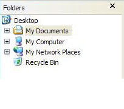 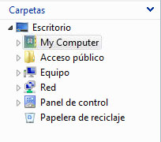Subcarpetas desplegadas
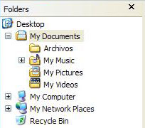 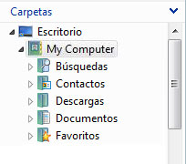Carpetas y Archivos
Del lado derecho se despliegan todos los archivos que tenemos, incluyendo las carpetas en las que están organizados.
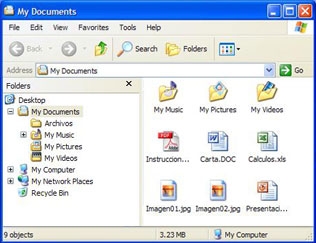 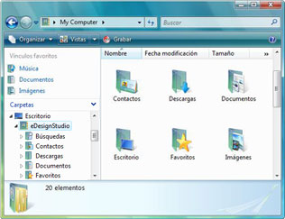Títulos
Como en cualquier ventana de Windows, se tiene la barra del título que muestra el nombre de la carpeta en la que se encuentra.
Menús
La barra de menú contiene los menús que permiten acceder a todas las operaciones que se pueden realizar sobre un archivo o carpeta, como: Archivo (File), Editar (Edit), Ver (View), entre otras. Al hacer clic en cada menú se abrirán las opciones que lo componen.
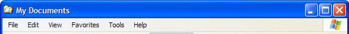
Los menús están disponibles en la versión de Windows Vista pero están ocultos de manera predeterminada. Puede mostrar menús si los necesita, aunque muchas de las mismas tareas que realizaría empleando menú están ahora disponibles en la barra de herramientas o en el menú que aparece cuando hace con el botón secundario en un archivo o una carpeta.
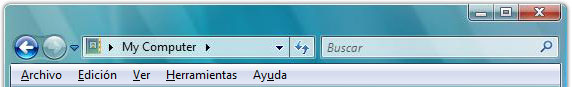Para mostrar menús, presione la tecla Alt y la barra de menús aparecerá encima de la barra de herramientas.
En Windows 7 la barra de menú no aparece de inicio, pero para que pueda aparecer, debes oprimir la tecla F10.
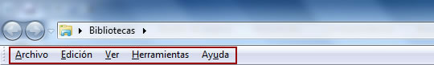Íconos
Contiene los iconos de las operaciones más utilizadas, de esta forma agiliza las funciones del sistema operativo. Si no está visible esta barra, seleccione del menú Ver (View), la opción Barra de Herramientas (toolbar), y después seleccione la opción Estándar (Standard buttons).
 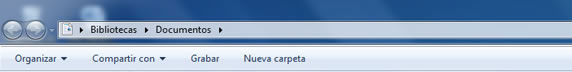
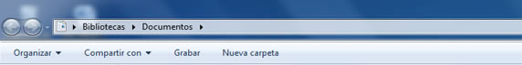
- El botón Atrás (Back) le permite ir a la última página que se haya visto.
- El botón Adelante (Forward) le permite ir una página hacia adelante.
- El botón Arriba (Up) le permitirá subir de nivel, es decir, situarse en la carpeta que contiene el archivo que está buscando.
- El botón de Búsqueda (search) muestra una ventana en la que se puede buscar el archivo que se elija.
- El botón Carpetas (folders) hace que en la parte izquierda de la ventana se vea la estructura de las carpetas (Explorador de Windows).
- El último botón, el botón Vistas (folder view) permite cambiar las vistas de las carpetas.
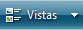
Dirección
Indica la ruta en donde se encuentra ese archivo, empezando por la unidad de almacenamiento, después la carpeta o las carpetas y luego el archivo.
Ejemplo:
La carpeta "Documentos", se encuentra dentro de la carpeta "My Computer", y todavía hay más carpetas hacia arriba.
Barra de Estado
Muestra información adicional sobre los elementos que tenemos seleccionados. Esta barra es opcional, para activarla, vaya al menú Ver (View), y haga clic en Barra de estado (Status Bar).
En Windows Vista se modificó la barra de estado y se convierte en panel de detalle, donde se muestra la información sobre el archivo seleccionado. Se encuentra activada de manera predeterminada, para desactivarla, vaya al menu Organizar (Organize) y haga clic en Diseño (Design) y Panel de Detalles (Status Bar).
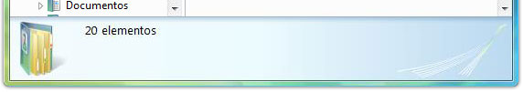 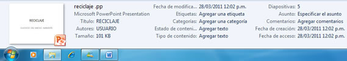